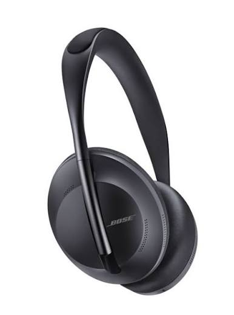

Les casques à réduction de bruit Bose (gamme QuietComfort) figurent parmi les leaders mondiaux de l'isolation acoustique. Reconnue pour avoir popularisé la réduction de bruit active (ANC), la marque américaine propose des casques qui créent une véritable « bulle de silence », idéale pour les voyageurs, les professionnels en open space et les audiophiles.
| Casque ANC |  | 300€ |